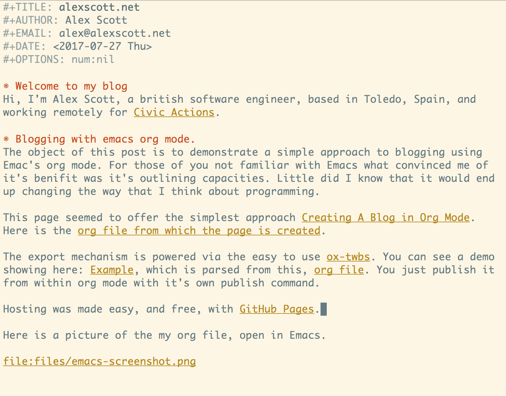

alexscott.net
Welcome to my blog
Hi, I'm Alex Scott, a british software engineer, based in Spain, and working remotely for Civic Actions.
Blogging with emacs org mode.
The object of this post is to demonstrate a simple approach to blogging using Emac's org mode. For those of you not familiar with Emacs what convinced me of it's benefits was it's outlining capacities. Little did I know that it would also end up changing the way that I think about programming.
My approach was based on Creating A Blog in Org Mode. Here is the org file from which that page is created, so you can see what we are working with.
The export mechanism is powered via the easy to use ox-twbs. You can see a demo showing here: Example, which is parsed from this, org file. You just publish from within org mode with it's ox twbs's own publish command.
Hosting was made easy, and free, with GitHub Pages.
Here is a picture of my org file, open in Emacs.
